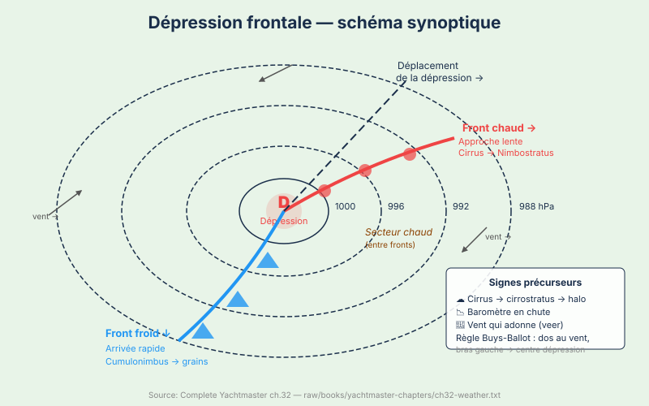
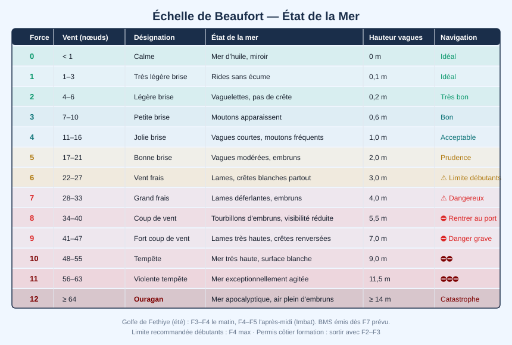

Météo Marine — Lire le Ciel et les Bulletins
Dimanche matin, jour 7. 7h30. À bord, ancré Hamam Koyu.
William est debout depuis 6h. Il a le baromètre à la main — 1012 hPa. Hier soir : 1015 hPa. Trois hPa en douze heures, en légère baisse. Pas dramatique, mais notable.
Il regarde l'horizon. Des cirrus en faisceaux — "queues de jument" — filent vers l'est. La couverture nuageuse s'épaissit progressivement depuis minuit.
Son téléphone : Windfinder indique force 4 cet après-midi, rafales 6 possible en fin de journée. WindyApp confirme. L'application Météo France (pour l'examen, c'est la référence française) afficherait "BMS Var 4 à 7" pour la zone Méditerranée orientale. William note tout dans son carnet — vieille habitude de consultant, documenter avant de décider.
Emmanuel le rejoint à 6h30. "Alors ?" "Force 4 cet après-midi, rafales 6 possible." Emmanuel regarde les cirrus. "Je confirme. On part tôt ou on attend demain." Rebecca sort à 7h15 avec son café. "On part où ?" William : "Kızılada. 7 milles. Mais je ne sais pas encore si c'est raisonnable." Rebecca : "En Martinique, les capitaines partent par n'importe quel temps." Emmanuel : "C'est pour ça que les capitaines de Martinique ont des bateaux neufs tous les cinq ans." Christelle rit.
"On y va ou pas ?" dit finalement William à Mehmet.
"Décide. C'est ton bateau."
Les systèmes météo — dépressions et anticyclones
La météo marine repose sur la compréhension des systèmes de pression atmosphérique. Une dépression est une zone où la pression atmosphérique est inférieure à l'environnement — l'air y converge et monte, formant nuages et précipitations. Un anticyclone est une zone de haute pression — l'air y descend et diverge, apportant généralement du beau temps.
La limite standard entre beau et mauvais temps se situe autour de 1013–1015 hPa. En dessous, méfiance. En dessus, généralement favorable.
Circulation des vents : Dans l'hémisphère nord, les vents tournent dans le sens inverse des aiguilles d'une montre autour d'une dépression (à cause de la force de Coriolis), et dans le sens des aiguilles d'une montre autour d'un anticyclone. La force du vent est proportionnelle au resserrement des isobares sur les cartes météo — plus les lignes sont proches, plus le vent est fort.
Anatomie d'une dépression frontale :
Le front chaud arrive progressivement, sur 200 à 300 km. Depuis le bateau, vous observez une séquence de nuages reconnaissable : d'abord des cirrus en filaments (les fameuses "queues de jument"), puis des cirro-stratus qui créent des halos autour du soleil, puis des alto-stratus qui voilent complètement le ciel, et enfin des nimbo-stratus qui apportent la pluie continue. Au passage du front chaud, le vent vire (tourne dans le sens des aiguilles d'une montre) et la pluie peut s'arrêter temporairement.
Le front froid suit avec une brutalité caractéristique. Un cumulonimbus en enclume peut atteindre 9 000 mètres. Le grain associé est violent — vents sautants, possibilité de grêle, forte mer brève — mais la durée est courte (30 à 60 minutes). Après le passage : éclaircie, baromètre qui remonte, visibilité excellente.
Règle de Buys-Ballot : Tournez le dos au vent dans l'hémisphère nord → le centre de la dépression est à votre gauche.

Voir concepts/meteorologie-marine, concepts/securite-meteo-et-pression.
L'échelle de Beaufort

L'échelle de Beaufort, créée en 1805 par l'amiral britannique Francis Beaufort, mesure la force du vent en 13 degrés (0 à 12) basés sur les effets observables sur la mer. C'est l'échelle universelle de la navigation maritime.
| Force | Vitesse (nœuds) | Description | État de la mer |
|---|---|---|---|
| 0–1 | 0–3 | Calme | Mer d'huile |
| 2–3 | 4–10 | Légère brise | Risées, petites vagues |
| 4 | 11–16 | Jolie brise | Vagues 1m, moutons |
| 5 | 17–21 | Bonne brise | Vagues 2m, embruns |
| 6 | 22–27 | Vent frais | Mer agitée, navigation difficile |
| 7 | 28–33 | Grand frais | Naviguation sportive |
| 8–9 | 34–47 | Coup de vent | Navigation dangereuse |
Ce que chaque force signifie en pratique :
La force 3 (7–10 nœuds) est la brise idéale pour le débutant — le bateau avance bien sous voiles, les vagues sont légères, la mer reste maniable. La force 4 (11–16 nœuds) représente la première limite confortable : les moutons commencent à apparaître, le bateau gîte légèrement mais reste pleinement maniable pour un skipper expérimenté. C'est la force de l'Imbat à Göcek — agréable et sportive.
La force 5 (17–21 nœuds) devient exigeante. Les vagues atteignent 2 mètres, les embruns mouillent le cockpit, un ris dans la grand-voile devient recommandé. La force 6 (22–27 nœuds) représente la limite haute recommandée pour les plaisanciers côtiers — la mer est véritablement agitée, les vagues peuvent être croisées, la manœuvre en marina devient délicate.
Au-delà de force 7, la navigation devient dangereuse pour un bateau côtier standard. Les coups de vent de force 8–9 peuvent générer des vagues de 4 à 6 mètres. La règle empirique du plaisancier raisonnable : si le bulletin annonce de la force 7, vous attendez au port.
Comment estimer la force du vent sans instruments : Regardez les vagues à distance — la présence de moutons (écume blanche à la crête) indique force 4. Des traînées d'écume continues : force 6. Des embruns arrachés en nappes : force 8 ou plus. Les arbres à terre : branches qui s'agitent = force 4, arbres entiers en mouvement = force 7+.
Lire un bulletin météo maritime
En France, les bulletins côtiers sont diffusés par CROSS (Centre Régional Opérationnel de Surveillance et de Sauvetage) sur VHF et sur le site VHF16/navtex.
Comment recevoir les bulletins :
- VHF : canaux météo 63 ou 80 (selon la région), diffusés à heures fixes par les CROSS (en général 7h45, 15h45, 19h45 UTC)
- Navtex : réception automatique sur 518 kHz (caractère "A" = Brest, "W" = Méditerranée)
- Internet/Apps : Météo France Marine, Windfinder, Windy, Météo Consult Marine
- Téléphone : 3250 (Météo France vocal)
Format d'un bulletin côtier :
BULLETIN MÉTÉO MARINE CÔTIER — CROSS MED
Valable jusqu'au 12 juillet 21h00 UTC
ZONE LION : vent NW 4 à 5 temporairement 6, mer agitée 2m
ZONE PROVENCE : vent variable 2 à 3, mer peu agitée 1m
Tendance : renforcement NW demain matin
Le bulletin indique : zone géographique (Lion, Provence, Pays de Loire...), validité, vent (direction + force Beaufort), état de la mer (hauteur significative), visibilité, et tendance.
BMS = Bulletin Météo Spécial : émis dès que des vents de force 7 ou plus sont prévus dans les 24 heures. C'est le signal d'alerte maximal pour la plaisance côtière — renoncer à la sortie ou chercher un abri immédiat.
Signes d'alerte :
- Baisse de pression > 3 hPa en 3h → probable coup de vent
- Cirrus suivis d'alto-stratus → front chaud en approche (12–24h)
- Ciel jaune-orangé le soir au west → souvent signe de mauvais temps
Voir concepts/signaux-meteo.
Vents locaux
Comprendre les vents locaux de votre zone de navigation est aussi important que de lire les bulletins généraux. Voici les principaux vents méditerranéens et leurs caractéristiques pratiques :
Mistral : Ce vent du nord-ouest canalisé dans la vallée du Rhône affecte le golfe du Lion et la côte provençale de Marseille à Toulon. Il peut atteindre 40 à 60 nœuds sans prévenir, surtout lors des premières heures d'établissement. Sa particularité : il s'accompagne d'un ciel parfaitement bleu et d'une visibilité exceptionnelle — le beau temps apparent est trompeur. La mer d'un Mistral fort est courte et creuse, particulièrement difficile à barrer. Il peut durer 3, 6 ou 9 jours (toujours multiples de 3, selon la tradition).
Tramontane : L'équivalent du Mistral pour le Languedoc (de Perpignan à Montpellier), accéléré dans le couloir entre Pyrénées et Massif Central. Caractéristiques similaires : ciel bleu, force 6–7 fréquent, mer désagréable dans le golfe du Lion.
Meltemi : Le vent dominant de Méditerranée orientale en été (juin–septembre), soufflant du NNW à NNE. Il s'établit généralement à 15–25 nœuds en milieu de journée et peut forcer à 35–40 nœuds lors des épisodes intenses de juillet–août. Il peut souffler pendant plusieurs jours consécutifs — prévoir un mouillage abrité des secteurs nord. En Égée du nord, il est particulièrement violent.
Imbat : Spécifique aux côtes turques de la mer Égée et du golfe de Fethiye, l'Imbat est une brise de mer classique qui s'établit en milieu de matinée (9h–11h) du secteur SW ou NW, à 10–18 nœuds, et s'estompe en fin d'après-midi (17h–19h). Très régulier en été — sa prévisibilité le rend idéal pour l'apprentissage. "Appareiller à l'aube, mouiller avant le vent" est l'adage de la navigation méditerranéenne estivale.
| Vent | Région | Caractère |
|---|---|---|
| Mistral | Golfe du Lion | NW fort et froid, jusqu'à 60 nœuds, beau temps associé |
| Tramontane | Languedoc | NW fort, similaire au Mistral |
| Meltemi | Méditerranée orientale | NNW, force 4–7 l'été, dominant juillet–août |
| Imbat | Côtes turques | Brise de mer SW/NW, 10–18 nœuds, après-midi uniquement |
Règle personnelle de William (à adopter) : Avant chaque sortie en mer, vérifier :
- Bulletin météo du jour (CROSS ou Météo France)
- Le baromètre (tendance sur 3h et 24h)
- Les nuages à l'horizon (quart-tour complet)
- L'état de la mer à l'extérieur du mouillage (houle de fond ?)
Ne partez jamais avec une météo que vous ne comprenez pas.
Ce dimanche à Hamam Koyu :
Baromètre : 1012 hPa (–3 en 12h). Cirrus présents. Windfinder : force 4 cet après-midi, rafales 6 possible.
Décision de William : Traversée vers Kızılada (7NM) à 9h, avant que le vent monte. Arrivée estimée 10h30 — avant les 14h annoncés comme plus venteux. Ancrage sous abri des vents dominants (NO). Si le vent monte trop : rester à l'ancre.
Décision correcte. Un skipper raisonnable part tôt, s'abrite tôt. "Appareiller à l'aube, mouiller avant le vent" — adage méditerranéen.
Question 1 : Le baromètre chute de 6 hPa en 3 heures à Kızılada. Quelle est votre décision ?
- A) Attendez — une chute de 6 hPa peut être normale en Méditerranée estivale
- B) Cherchez un abri immédiatement — seuil de coup de vent dépassé (≥ 2 hPa/h pendant 3h)
- C) Réduisez la toile mais continuez — 6 hPa en 3h correspond à un vent de force 6
Voir la réponse
Réponse : B — Règle météo : ≥ 2 hPa/heure pendant 3 heures consécutives = coup de vent imminent (force 8+, ≥ 34 nœuds). Ici : 6 hPa / 3 h = 2 hPa/h, le seuil est atteint. La décision correcte est de chercher un abri immédiatement, pas d'attendre la confirmation. En Méditerranée, ces coups de vent peuvent se développer en moins d'une heure.Question 2 : Tôt le matin, William voit des cirrus en "queues de jument", puis une voile de cirro-stratus qui fait apparaître un halo autour du soleil. Quelle est l'interprétation correcte ?
- A) Anticyclone en formation — beau temps stable pour 48h
- B) Front chaud à 12–24h — dégradation progressive avec pluie continue probable
- C) Brouillard radiatif matinal — se dissipera avant 10h
Voir la réponse
Réponse : B — La séquence cirrus → cirro-stratus (halo solaire) → alto-stratus → nimbo-stratus est la signature classique de l'approche d'un front chaud. Ce processus dure 12 à 24h avant les précipitations. Le halo solaire ou lunaire dans les cirro-stratus est un indicateur fiable de dégradation dans les 24h.Question 3 : Le bulletin Météo France annonce "vent de NW 20–25 nœuds avec rafales à 35 nœuds". Quelle force Beaufort correspond à 35 nœuds en rafales ?
- A) Force 6 (vent frais)
- B) Force 7 (grand frais)
- C) Force 8 (coup de vent)
Voir la réponse
Réponse : C — L'échelle Beaufort : force 6 = 22–27 nœuds, force 7 = 28–33 nœuds, force 8 = 34–40 nœuds. 35 nœuds = force 8 (coup de vent). À cette vitesse, la navigation côtière devient dangereuse pour les plaisanciers non expérimentés. Les 20–25 nœuds de fond correspondent à force 5–6, les rafales à 35 = force 8.Question 4 : L'Imbat (brise thermique) du golfe de Göcek souffle tous les après-midis de SW à NW, force 3–5. Quelle en est la cause principale ?
- A) Un phénomène de courants marins locaux qui accélèrent l'air en surface
- B) Le différentiel de température entre la terre (chaude) et la mer (plus fraîche) — la terre chauffe l'air qui monte, la mer aspire l'air frais
- C) Les anticyclones estivaux méditerranéens qui créent un flux régulier du nord
Voir la réponse
Réponse : B — La brise thermique (sea breeze) se développe quand la terre se réchauffe plus vite que la mer. L'air chaud au-dessus de la terre monte, créant une dépression locale qui aspire l'air frais de la mer. Elle commence vers 10–11h et atteint son maximum l'après-midi. Prévisible et régulière en été méditerranéen — idéale pour planifier les sorties voile.La traversée vers Kızılada est belle, mais le vent force à 20 nœuds dès 13h. Ils tiennent deux ris dans la grand-voile. À bord, Christelle cherche la trousse de sécurité. "Où est le gilet de sauvetage ?"
Session 5.2 — Équipement de Sécurité : l'armement obligatoire et son utilisation.